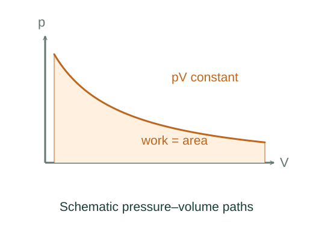

Derive the logarithm in isothermal gas work
An ideal gas at constant temperature has pressure inversely proportional to volume. Integrating that decreasing pressure gives a logarithm.
What the symbols mean
n: fixed amount in moles; R: gas constant; T: constant absolute temperature; Vi, Vf: initial and final volumes.
When this applies
Ideal gas, fixed amount, reversible or quasistatic mechanically balanced expansion or compression, and constant temperature maintained by heat exchange.
Why the work contains a logarithm
Picture a gas expanding slowly against a piston while a reservoir holds its temperature fixed. The piston moves, but the force on it decreases as the gas spreads out. We must add up the work over that changing force, rather than multiply one pressure by the whole volume change.

The pressure falls as the volume grows
During an isothermal path nRT is constant, but pressure changes as volume changes. Thus pressure cannot be pulled out of the work integral.
Doubling the volume halves the pressure at this fixed temperature. The falling curve in the diagram is therefore the pressure that must be used throughout the work calculation.
A closer lookWhy does the ideal gas obey pV = nRT? ↗Derive pV = nRT from molecular collisionsSmall piston motions contribute small areas
For a small piston displacement, force times distance is the gas pressure times the small volume swept out. In the reversible limit, the pressure opposing the piston differs only infinitesimally from the gas pressure.
Adding those contributions gives the area under the pressure–volume curve. Substituting the ideal-gas pressure leaves
The fixed temperature allows nRT to come outside the integral. The reciprocal volume must stay inside: it is the part that changes as the piston moves.
Adding reciprocal volumes gives a logarithm
The antiderivative of reciprocal volume is a logarithm. Evaluating it at the final and initial volumes subtracts two logarithms, which combine into a logarithm of their ratio:
The ratio is dimensionless, as the argument of a logarithm must be. During expansion it exceeds one, so the work done by the gas is positive. Reversing the path reverses the sign.
Heat replaces the energy carried out as work
Ideal-gas internal energy depends only on temperature. Here its change is zero, so the absorbed heat equals the work done by the gas.
Constant temperature does not mean zero heat transfer. Heat must enter from the reservoir to replace the energy the gas transfers to the moving piston.
A closer lookWhy does the first law have this sign? ↗The first law and work by an expanding gasA worked example
One mole of ideal gas at 300 K expanding reversibly to twice its volume does 8.314 × 300 × ln 2 ≈ 1.73 kJ of work.
Derivation behind this calculation ↗A point to keep straight
The same endpoints reached by free expansion give Wby = 0, not this logarithmic work. Reversibility and path matter.
Check the assumptions and derivation ↗